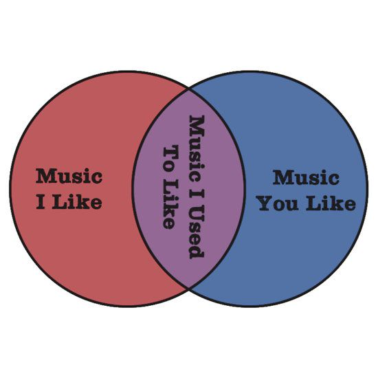
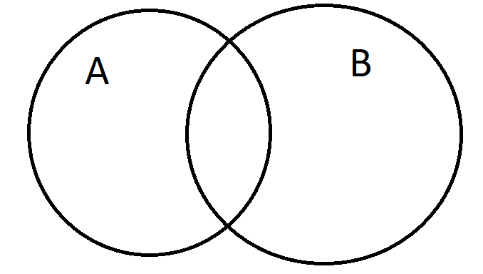
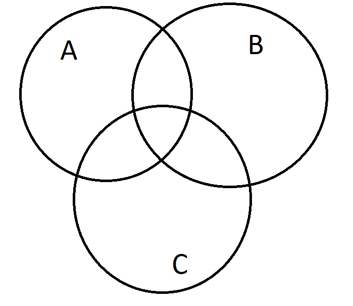
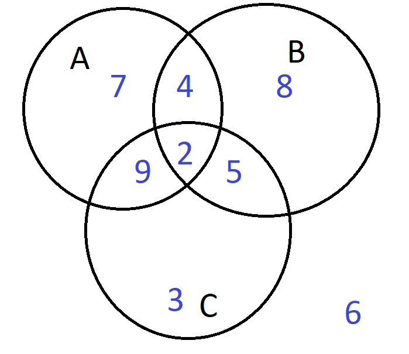

Let \(\displaystyle A = \left\{ a,b,c,d,e,...,x,y,z\right\} \) be the alphabet.
\(A\) is a set.
The letters are the elements.
\( a\in A\) is said "\(a\) is in \(A\)."
\( \phi \notin A\) is said "phi is not in \(A\)."
Example - Central America
Name all the countries in Central America. Call this set \(A\).
What is \(n(A)\)?
Let \( B = \{ Belize, Guatemala, Panama\}\). What does \(B \subset A\) mean?
Let \( C = \{ Guatemala, Panama, Belize\}\). Does \(B \subseteq C\)?
Example -
\(\displaystyle A = \left\{ 2,4,6,8,10, ... \right\} \)
\(\displaystyle A = \left\{ x \mid x>0, x=2n \text{ where } n \in \mathbb{N} \right\} \)
\(\mathbb{N}\) is the set of natural numbers \(\{1,2,3,4,...\}\).
Example - Venn Diagrams

What is the universal set?
What is the intersection?
How could we describe music you don't like?
How could we describe music you or I like?
How could we describe music neither of us like?
What is the complement of the universal set?
Example - Basic Set Properties
Some set properties
Let \(U\) be the universal set.
\( A \cup B = B \cup A\)
\( A \cap B = B \cap A\)
\( A \cup (B \cup C) = (A \cup B) \cup C\)
\( A \cap (B \cap C) = (A \cap B) \cap C\)
\(A \cup (B \cap C) = (A \cup B) \cap (A \cup C)\)
\(A \cap (B \cup C) = (A \cap B) \cup (A \cap C)\)

What is \( (A \cup B)^c \)?
What is \( (A \cap B)^c \)?
These are DeMorgan's Laws.
Example - Car dealership
Let \(U\) be the set of all cars at a dealership.
Let \(A = \{ x \in U | x\text{ has satellite radio} \} \).
Let \(B = \{ x \in U | x\text{ has a moon roof} \} \).
Let \(C = \{ x \in U | x\text{ has side air bags} \} \).
Find an expression for the set of cars with at least one of the options.
Find an expression for the set of cars with exactly one option.
Find an expression for the set of cars with satellite radio and a side air bags, but no moon roof.
What does a Venn diagram look like here?
Example - 3 set Venn Diagram

How many regions are shown in the Venn Diagram above? Label each region with its own set expression.
Example - Power set
Consider the set A = {dog, cat, fish, hamster}. How many subsets of A are there?
Example - countries
3 minutes. Indivually name as many countries as you can that begin with the letter M.
Get in groups of 3 or 4.
What is the intersection of your set?
What is the union?
What is \(n(M)\)?
Let \(I\) be the set of island countries. What is \(M \cap I\)?
Let \(A\) be the set of African countries. What is \(M \cap A\)?
What is \( (M \cap A) \cup (M \cap I) \)?
What is \( (M \cap A) \cap (M \cap I) \)?
Example - Business Survey
A recent survey of businesses showed 750 offer health insurance, 640 offer dental insurance, and 280 offer both.
Let H be the set of businesses that offer health insurance.
Let D be the set of businesses that offer dental insurance.
What is H\(\cup\)D?
What is H\(\cap\)D?
What are n(H), n(D), and n(H\(\cap\)D)?
What is n(H\(\cup\)D)?
Sketch a Venn Diagram of the situation.
Example - Coffee Survey
A recent survey of 100 coffee drinker showed 70 take sugar, 60 take cream, and 50 take both.
How many take sugar or cream?
Sketch a Venn Diagram of the situation.
Example -
Let n(U)=250, n(A)=85, n(B) = 130, and n(A\(\cap\)B)=35. Find n(A\(\cup\)B)\(^c\). Draw a Venn Diagram of the situation.
Example -

Consider the Venn diagram above and find the quanities below:
n(A\(^c\))
n(B\(^c\))
n(A\(^c\cap\)B\(^c\))
n(A\(\cup\)B)
n(A\(\cup\)B)\(^c\)
n(A\(\cap\)B)
n(A\(\cap\)B)\(^c\)
n(A\(^c\cup\)B\(^c\))
n(B\(\cap\)C\(^c\) )
Example - Magazine advertising
A company advertises a product in 3 magazines: Sports Illustrated, People, and Time.
A Survery of 500 people who bought the product reveals the information below.
180 saw ads in SI
200 saw ads in People
192 saw ads in Time
84 saw ads in both SI and People
52 saw ads in both SI and Time
64 saw ads in both People and Time
38 saw ads in all three
Draw a Venn Diagram of the situation.
How many learned of the product from at least one magazine?
How many learned of the product from exactly one magazine?
Example - Health Class
A health class surveyed 1100 students from freshman dorms about eating habits in the cafeteria.
425 ate breakfast
680 ate lunch
855 ate dinner
275 ate breakfast and lunch
505 ate lunch and dinner
375 ate breakfast and dinner
240 ate all three
Draw a Venn Diagram of the situation.
How many ate only breakfast?
How many ate at least 2 meals in the cafeteria?
How many ate only 1 meal?
How many didn't eat in the cafeteria?
Example - Sociology project
Charles Tally gave the following summary of his interviews with 135 students for a sociology project:
65 said they like to go to movies.
77 said they like to go to football games.
61 said they like to go to the theater.
28 said they like to attend movies and football games.
25 said they like to attend movies and the theater.
29 said they like to attend football games and the theater.
8 said they like to attend all three.
4 said they do not like to attend any of these.
The professor refused to accept Charles’s paper because the information was inconsistent.
Was the professor justified in claiming that the information was inconsistent?